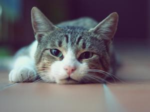
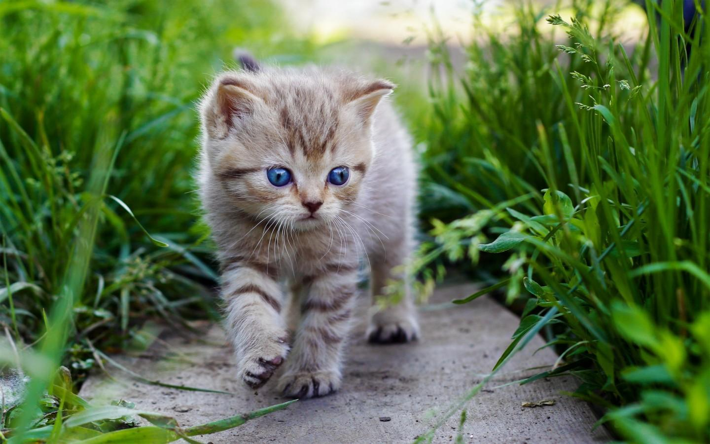
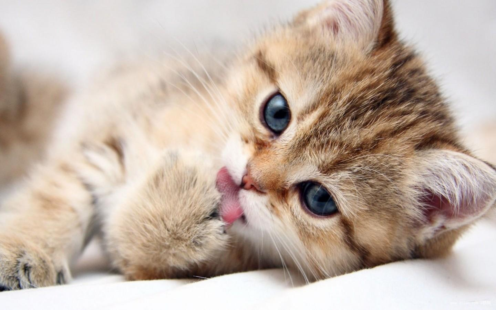

猫作为性情温顺，聪明活泼的动物，作为家庭宠物已经有长久的历史，在欧美国家，家猫程度尤其很高。猫咪的训练要从幼时抓起，先要摸清猫咪的脾气，然后根据需要选择不同的方式来进行训练。以下几种方式可供选用：强迫、诱导、奖励、惩罚、喊叫。

把猫放在适当的宠物专用箱（如宠物航空箱。如果你用铁丝笼装猫最好在笼子外罩个布罩）带回来很重要，不要用纸箱。如果是从朋友家带回一只成年猫，最好能要求带回一件这只猫所熟悉的用品。例如，这只猫平常用惯的便盆或猫窝或玩具，它会感到比较安全，而能较快地在新地方安定下来。

要养成从小吃猫粮的好习惯，幼猫从4周龄开始就可以吃猫粮，开始用温水浸泡。小猫在10周龄时就可以喂食干猫粮了，可让它自由采食，并备清洁饮水。猫在12个月龄以上就进入成猫阶段，成猫的身体和消化系统已基本发育成熟，能较好的消化和吸收营养素。成猫在营养上需要全价而均衡的营养，维持猫的最佳健康状态同时防止衰老。
宠物猫猫